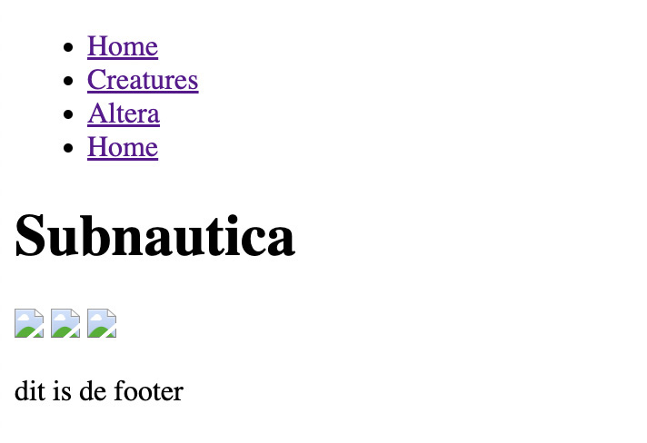
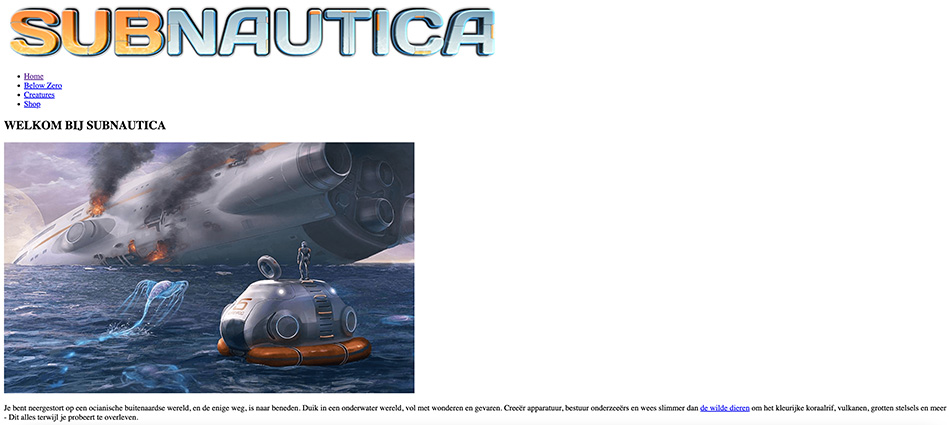
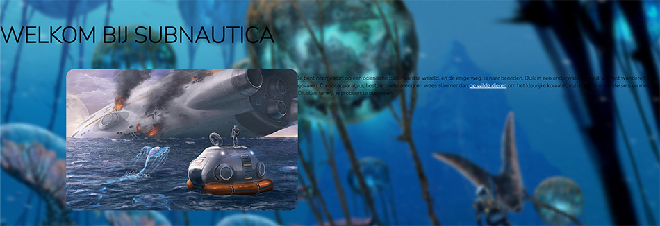
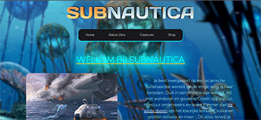
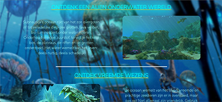
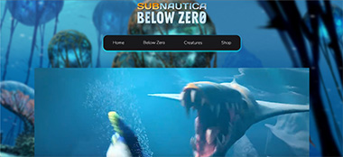
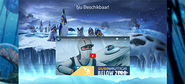
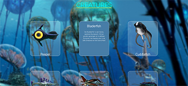
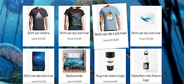

Subnautica
Back

De opdracht
Type: Individuele opdracht
Opdracht: Front-end development
Periode: Mei 2023
In dit allereerste technische vak leer je hoe tof het is om met webtechnologie interactie vorm te geven. Dit vak gaat over content structureren met HTML en vormgeven met CSS. Uiteindelijk maak je een volledig werkende website die je zelf 'from scratch' hebt gecodeerd. Het thema was zelf in te vullen.
Het idee
Ik heb voor de game Subnautica gekozen. Subnautica is een prachtig onderwater game, en hiermee wilde ik mee spelen.
Naarmate je meer naar beneden scrolt op de website, lijkt de gebruiker dieper de oceaan in te duiken. Er zitten geen spoilers in, zodat mensen niet van tevoren al teveel informatie krijgen over de game. Er wordt vooral gefocust op het enthousiast maken van de gebruiker om de game ook te gaan spelen.
Om aan de eisen van het vak te voldoen, heb ik een shop toegevoegd waarbij je merchandise van Subnautica kan halen.
Het proces
In de loop van de weken kregen we steeds nieuwe informatie en oefeningen die we moesten maken, zodat we konden itereren op onze website.
We begonnen met HTML, dit was alleen de kale tekst en plaatjes erin zetten.
Vervolgens kregen we oefeningen met CSS in de les. Deze konden we weer toepassen op de website.
Hier ben ik begonnen met het maken van de navigatiebar. Daarvoor heb ik een tutorial gevolgd op YouTube.
Latere lessen kregen we uitleg over een 'flexbox'. Hiermee kan je makkelijk items op de goede plek zetten op de website
  Pagina's
     Andere projecten

Aston Martin

Powder

Aperture